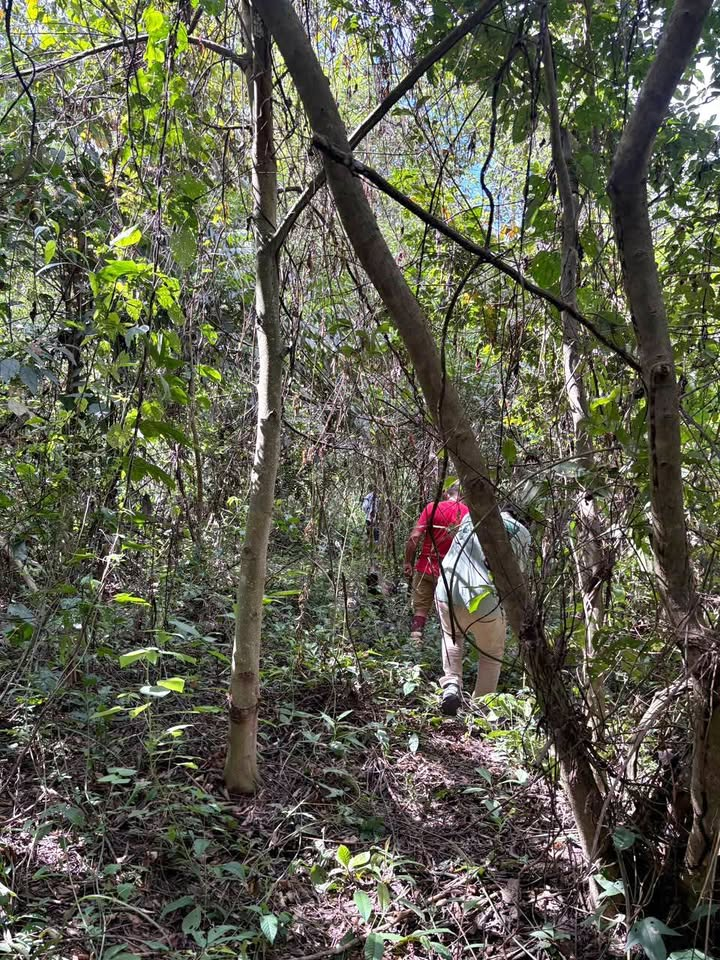

Precio desconocido 3 ha

🌿🚨EN VENTA– 3 HECTÁREAS EN TARAPOTO 📍 Ubicación privilegiada Ubicado en la vía Tarapoto – Lamas, a pocos minutos de: ✅ Castillo de Lamas ✅ Barrio Huayco ✅ Mirador Sheretero ✅ Centro de la ciudad de Lamas 🌳 Área total: 3 Hectáreas (30,000 m²) 💧 Lo que hace especial a esta propiedad: ✔ Abundante disponibilidad de agua durante todo el año. ✔ Cuenta con ojos de agua naturales. ✔ Pasa una tubería de agua dentro de la propiedad. ✔ Excelente para proyectos que requieran recurso hídrico permanente. 🏡 Ideal para: ✅ Hotel ecológico o lodge turístico. ✅ Casa de campo de lujo. ✅ Centro recreacional